Piezas de carrocería para Honda en Panamá
122 piezas disponibles hoy, cada una con su foto y su código: flares (16), defensas delanteras (16), defensas traseras (12), faros y lámparas delanteras (11).
- Garantía de 3 días
- Foto real de cada pieza
- Efectivo, Yappy o ACH
- Lunes a sábado, 8:00 a. m. a 5:00 p. m.
Por modelo
Flares para Honda 16
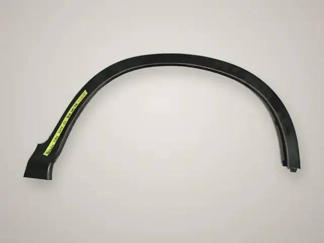
FL006CRV2017-22 · lado derecho · genérico FL015CRV2015-16 · lado izquierdo · original
FL015CRV2015-16 · lado izquierdo · original FL017CRV2015-16 · lado derecho · original
FL017CRV2015-16 · lado derecho · original FL019CRV2017-22 · lado derecho · original
FL019CRV2017-22 · lado derecho · original FL024CRV2012-16 · lado derecho · original
FL024CRV2012-16 · lado derecho · original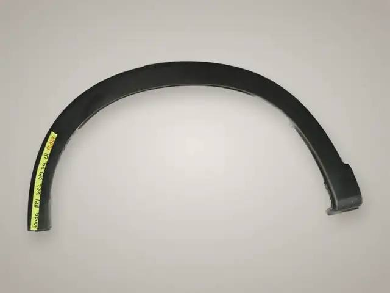
FL027HRV2019-22 · lado izquierdo · original FL039CRV2015-16 · lado derecho · genérico
FL039CRV2015-16 · lado derecho · genérico FL065CRV2015-16 · lado derecho · original
FL065CRV2015-16 · lado derecho · original FL092CRV2017-22 · lado izquierdo · original
FL092CRV2017-22 · lado izquierdo · original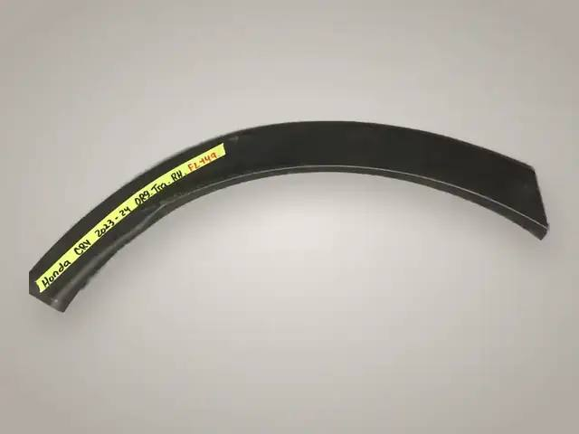
FL149CRV2023-26 · lado derecho · original FL151CRV2018-22 · lado derecho · original
FL151CRV2018-22 · lado derecho · original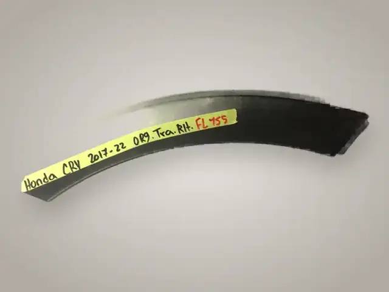
FL155CRV2017-22 · lado derecho · original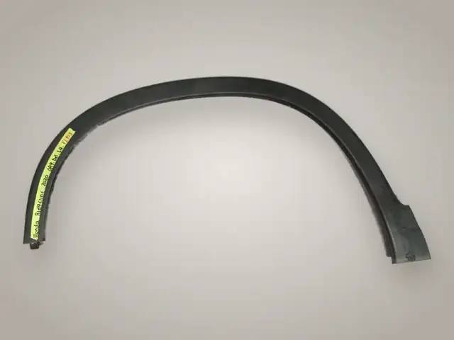
FL103Ridgeline2020 · lado izquierdo · original FL164CR-V2013-16 · lado izquierdo · original
FL164CR-V2013-16 · lado izquierdo · original FL165CR-V2013-16 · lado derecho · original
FL165CR-V2013-16 · lado derecho · original FL169CR-V2017-22 · lado derecho
FL169CR-V2017-22 · lado derechoDefensas delanteras para Honda 16
 866CR-V2008-10 · original
866CR-V2008-10 · original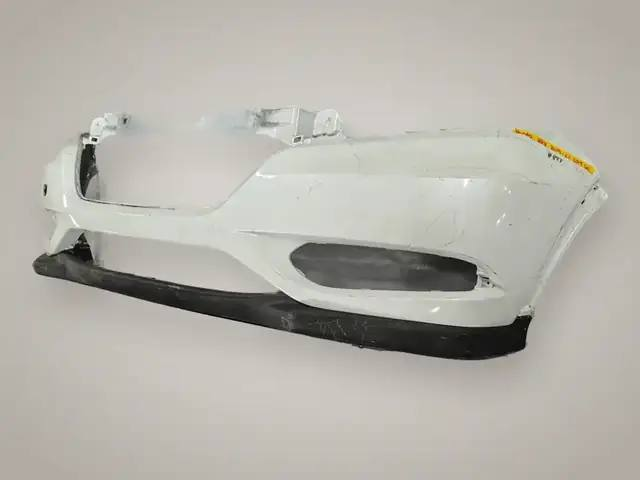
897HR-V2019-22 · original 898CR-V2015-16 · genérico nuevo
898CR-V2015-16 · genérico nuevo 899City2015-20 · genérico
899City2015-20 · genérico 900CR-V2015-16 · original
900CR-V2015-16 · original 901Odyssey2016-20 · original
901Odyssey2016-20 · original 902HR-V2016-20 · original
902HR-V2016-20 · original 903HR-V2016-19 · original
903HR-V2016-19 · original 904Pilot2019-22 · original
904Pilot2019-22 · original 905CR-V2012-14 · original
905CR-V2012-14 · original 906Pilot2018-22 · genérico
906Pilot2018-22 · genérico 907City2014-16 · genérico
907City2014-16 · genérico 908Pilot2009-15 · genérico
908Pilot2009-15 · genérico 909CR-V2012-14 · original nuevo
909CR-V2012-14 · original nuevo 910CR-V2015-17 · original
910CR-V2015-17 · original 911CR-V Inferior2020-22 · original
911CR-V Inferior2020-22 · originalDefensas traseras para Honda 12
 DT151CRV2020-22 · original
DT151CRV2020-22 · original DT152CRV2020-22 · original
DT152CRV2020-22 · original DT153Pilot2016-18 · original
DT153Pilot2016-18 · original DT154City2008-13 · original
DT154City2008-13 · original DT155Pilot2016-18 · original
DT155Pilot2016-18 · original DT187CR-V2015-16 · original
DT187CR-V2015-16 · original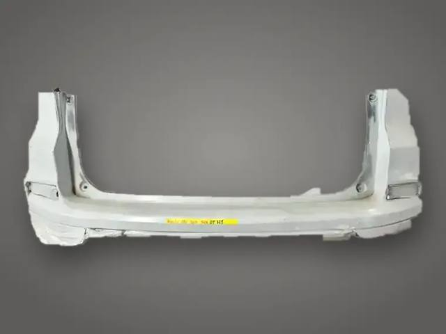
DT227CR-V2015-16 · genérico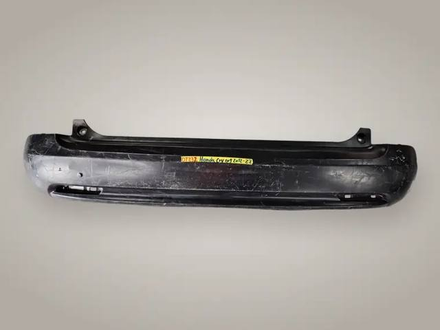
DT232CR-V2012-22 · original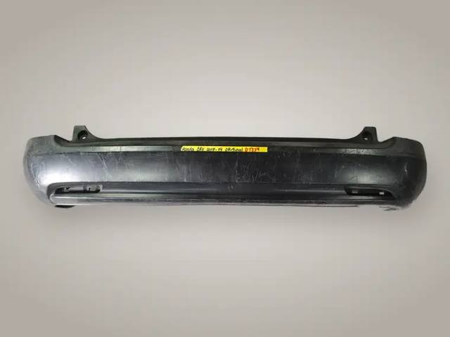
DT234CR-V2017-19 · original DT243CR-V2017-19 · original
DT243CR-V2017-19 · original DT246CR-V2017-19 · original
DT246CR-V2017-19 · original DT249CR-V2017-20 · original
DT249CR-V2017-20 · originalFaros y lámparas delanteras para Honda 11
 081CR-V2017-22 · lado derecho · original
081CR-V2017-22 · lado derecho · original 083Civic Coupe2014-15 · lado derecho · original
083Civic Coupe2014-15 · lado derecho · original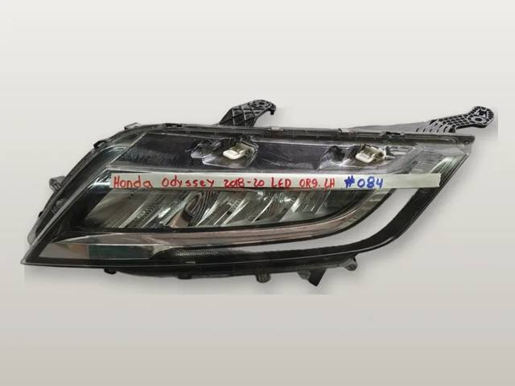
084Odyssey2018-20 · lado izquierdo · original 085CRV2012-14 · lado izquierdo · original
085CRV2012-14 · lado izquierdo · original 086Pilot2016-2018 · lado derecho · genérico
086Pilot2016-2018 · lado derecho · genérico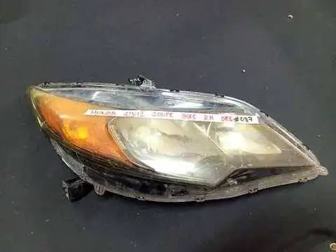
087Civic Coupe2014-15 · lado derecho · original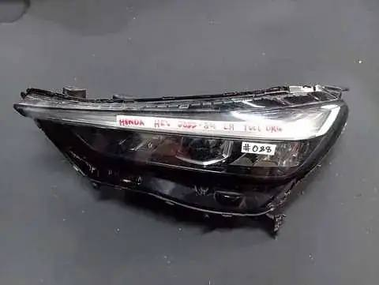
088HRV2023-26 · lado izquierdo · original 089HR-V2019-22 · lado izquierdo · original
089HR-V2019-22 · lado izquierdo · original 090Civic Coupe2014-15 · lado izquierdo · original
090Civic Coupe2014-15 · lado izquierdo · original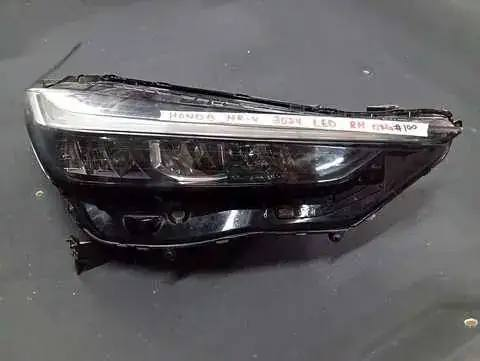
100HR-V2023-26 · lado derecho · original 101CR-V2007-2011 · original
101CR-V2007-2011 · originalParrillas para Honda 11
 523City2019 · original
523City2019 · original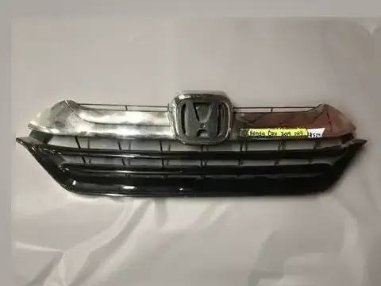
524CRV2017-19 · original 526HRV2016-18 · original
526HRV2016-18 · original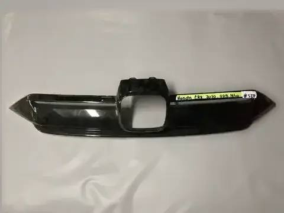
527CRV2020-22 · original nuevo 528Civic2015 · genérico nuevo
528Civic2015 · genérico nuevo 529CRV2012-14 · genérico nuevo
529CRV2012-14 · genérico nuevo 530CRV2010-11 · original nuevo
530CRV2010-11 · original nuevo 531CRV2017-19 · original nuevo
531CRV2017-19 · original nuevo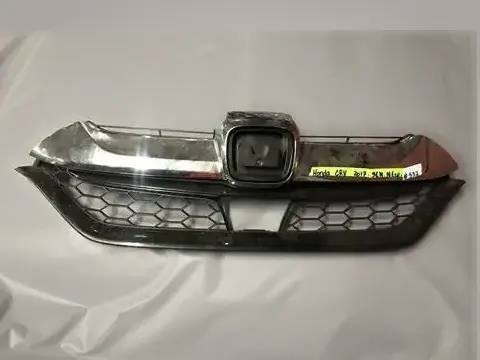
532CRV2017-19 · genérico nuevo 533Fit2017 · original nuevo
533Fit2017 · original nuevo 675CR-V2007-09 · original
675CR-V2007-09 · originalCovers de halógena para Honda 11
 CH009Pilot2009-15 · lado derecho · original
CH009Pilot2009-15 · lado derecho · original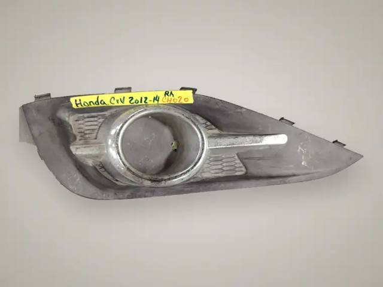
CH020CR-V2012-14 · lado izquierdo · original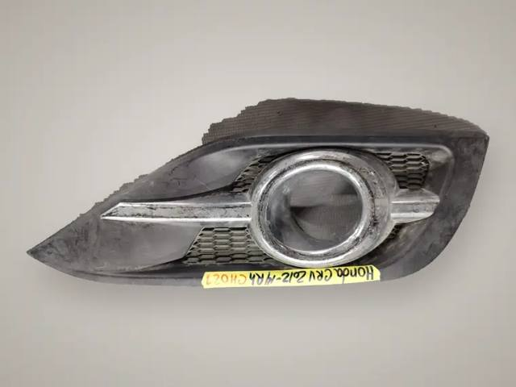
CH021CR-V2012-14 · lado derecho · original CH022CR-V2012-14 · lado derecho · original nuevo
CH022CR-V2012-14 · lado derecho · original nuevo CH031Pilot2009-15 · lado izquierdo · original
CH031Pilot2009-15 · lado izquierdo · original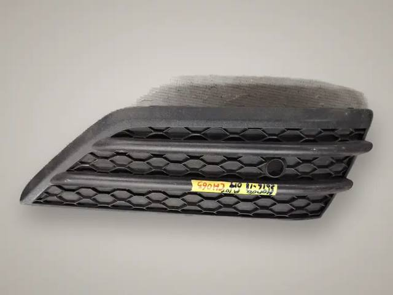
CH065Pilot2016-18 · original CH101Civic2019-21 · lado izquierdo · original nuevo
CH101Civic2019-21 · lado izquierdo · original nuevo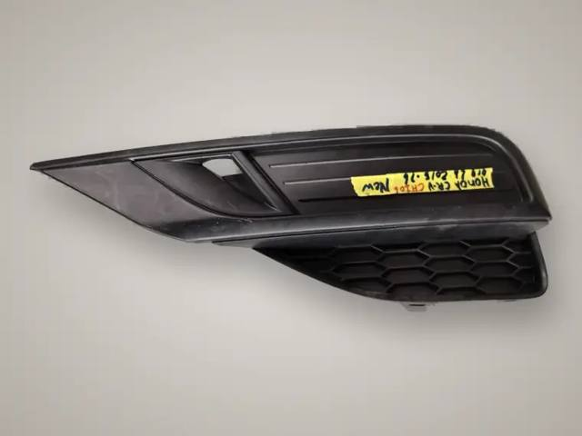
CH106CR-V2015-16 · lado izquierdo · original nuevo CH108City2018-20 · lado izquierdo · original nuevo
CH108City2018-20 · lado izquierdo · original nuevo CH115CR-V2017-19 · lado izquierdo
CH115CR-V2017-19 · lado izquierdo CH144CR-V2012-14 · lado derecho
CH144CR-V2012-14 · lado derechoRetrovisores para Honda 7
 RV044Civic Sedán1996-00 · lado izquierdo
RV044Civic Sedán1996-00 · lado izquierdo RV054Civic Sedán1996-00 · lado derecho
RV054Civic Sedán1996-00 · lado derecho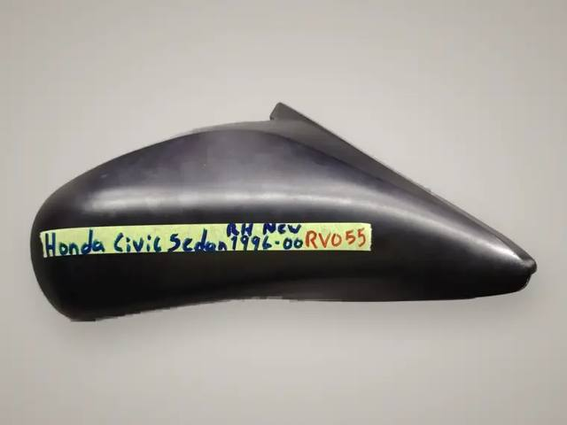
RV055Civic Sedán1996-00 · lado derecho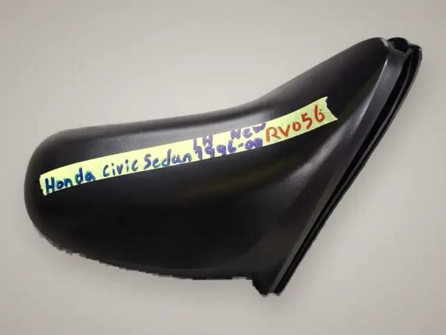
RV056Civic Sedán1996-00 · lado izquierdo RV057Civic Sedán1996-00 · lado derecho
RV057Civic Sedán1996-00 · lado derecho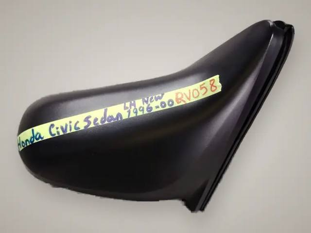
RV058Civic Sedán1996-00 · lado izquierdo RV059Civic Sedán1996-00 · lado izquierdo
RV059Civic Sedán1996-00 · lado izquierdoDefensas delanteras inferiores para Honda 6
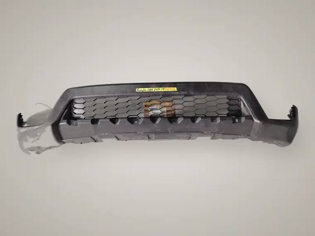
DDI011CR-V2017-19 DDI015CR-V2017-19
DDI015CR-V2017-19 DDI017CR-Voriginal
DDI017CR-Voriginal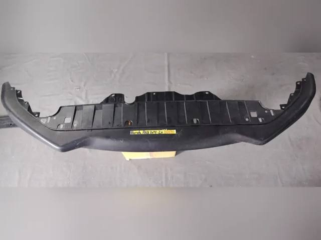
DDI030HR-V2014-20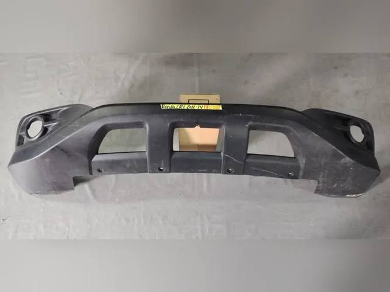
DDI032CR-V2012-14 DDI007CR-V2007-10 · original
DDI007CR-V2007-10 · originalLámparas traseras para Honda 5
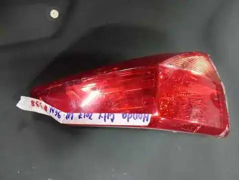
338City2017 · lado izquierdo · genérico 346CRV2010-11 · lado izquierdo · genérico
346CRV2010-11 · lado izquierdo · genérico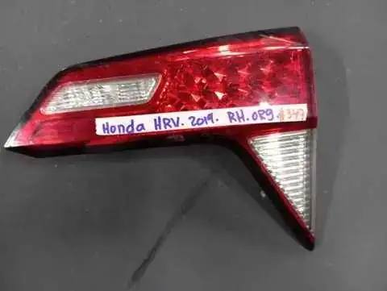
347HR-V2016-22 · lado derecho · original 351HRV2019-22 · lado izquierdo · original
351HRV2019-22 · lado izquierdo · original 858Civic Sedan2012-15 · lado derecho · original
858Civic Sedan2012-15 · lado derecho · originalGuardafangos para Honda 4
 GF100CR-V2012-14 · lado izquierdo · original
GF100CR-V2012-14 · lado izquierdo · original GF102City2013-2020 · lado derecho · original
GF102City2013-2020 · lado derecho · original GF136HR-V2016-2022 · lado izquierdo · original
GF136HR-V2016-2022 · lado izquierdo · original GF143Pilot2019-22 · lado derecho · original nuevo
GF143Pilot2019-22 · lado derecho · original nuevoCubrepolvos para Honda 3
 CP014CRV2012-16 · lado derecho · genérico
CP014CRV2012-16 · lado derecho · genérico CP025Civic2016-18 · lado izquierdo · genérico
CP025Civic2016-18 · lado izquierdo · genérico CP077CR-Voriginal
CP077CR-VoriginalHalógenas y faros antiniebla para Honda 3
 HA016Pilot2016-18 · lado izquierdo · original
HA016Pilot2016-18 · lado izquierdo · original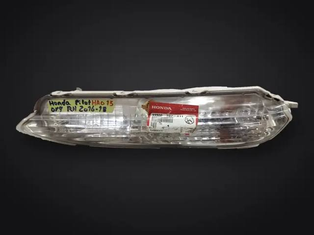
HA015Pilot2016-18 · lado derecho · original HA079Civic Sedán2013-15 · lado derecho
HA079Civic Sedán2013-15 · lado derechoEstribos y rolling boards para Honda 2
 RB031CR-V
RB031CR-V RB007CR-V
RB007CR-VPuertas para Honda 2
 PT055Pilot
PT055PilotCapós para Honda 2
Marcos de radiador para Honda 2
 MR042CR-V
MR042CR-V MR046City
MR046CityRefuerzos delanteros para Honda 2
 R027City / Fit
R027City / FitVidrios para Honda 2
 VA039CR-V
VA039CR-VTapas de baúl para Honda 1
 TB034HR-V
TB034HR-VDefensas traseras inferiores para Honda 1
 DTI021Pilot
DTI021PilotExtensiones de defensa trasera para Honda 1
 EDT015CR-V
EDT015CR-VTapas superiores de radiador para Honda 1
 TA026CR-V
TA026CR-VGuardafangos traseros para Honda 1
Otras marcas
ToyotaKIAHyundaiNissanSuzukiGACBMWMitsubishiFordMercedes-BenzMazdaChevroletJeepForthingIsuzuVolkswagenBYDLexusAudiMiniCheryFiatMaxusJaecooRAMLincolnDFSKDodgeChanganMGPorschePeugeotAcuraSubaruInfinitiDongfengHavalOmodaDaewooLand RoverVolvoJMCUniversalJACGMCOpelCadillacScionRenaultKaiyiDaihatsuKarryInternationalJaguarGeely